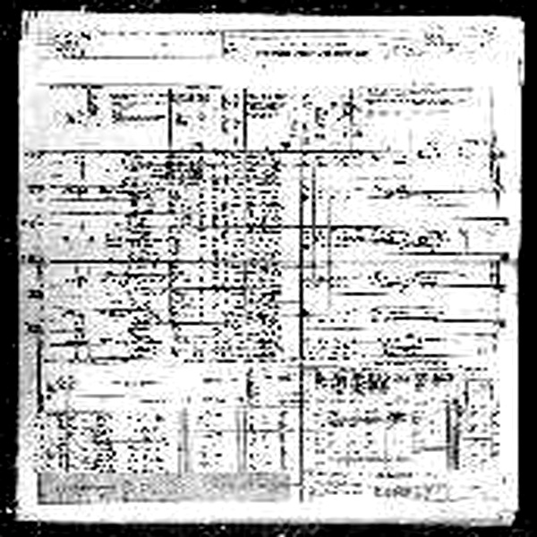
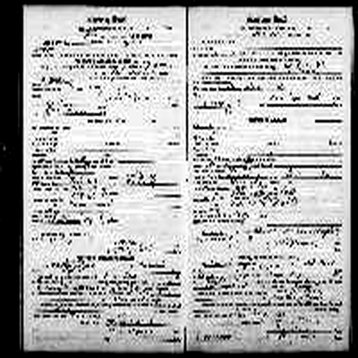

Ora Foster Campbell
1898 – 1988
Quick Facts
Immediate Family
Parents
Charles Thomas Foster (1874–1962) and Mary Cordia “Cord” Williams Foster (1872–1952), linked as parents on Ora’s Find a Grave memorial. This is user-contributed memorial evidence; original records and separate profiles remain for Ora’s own research turn. SUPPORTEDChildren
- Nelma Campbell (1920–deceased; listed on FamilySearch Logan profile) SUPPORTED
- James Otis Campbell (1920–1976) SUPPORTED
- Logan Ray Campbell (1927–2017) SUPPORTED
- Robert Lee Campbell (1931–1954) SUPPORTED
- Edward Thomas Campbell (1932–1995) SUPPORTED
- Ernest Franklin Campbell (1935–1994) SUPPORTED
- Samuel Eugene “Sam” Campbell (1937–1998) DOCUMENTED
- Virginia Elece Campbell (1942–2011) SUPPORTED
FamilySearch lists these eight children. Ora’s Find a Grave memorial lists five children; names differ for the eldest daughter (“Naomi Campbell Reeves,” 1919–1985) and omit some of the FamilySearch list. Identity resolution remains open.
Siblings
- Rose Foster Witt (1900–1986)
- Ernest Foster (1902–1924)
- Clyde Foster (1903–1985)
- Grace Foster Bell (1904–1994)
- Bess Foster Bell (1906–1995)
- William Foster (1908–1996)
- Short Foster (1909–1988)
- Mae Foster Farris (1914–2001)
These names are linked on Ora’s user-contributed Find a Grave memorial; not all identities have been independently verified.
Siblings
No sibling information is listed in this profile.
On Family Tree Sites
Couple Folder
Open Logan Ira Campbell × Ora Foster Campbell couple folder
· Ora Foster Campbell personal folder for records, photos, notes and stories.
Life Timeline
1898
Born, per the FamilySearch family profile; exact date and place not established. SUPPORTED
22 September 1918
Married Logan Ira Campbell in Liberty, Casey County, Kentucky, per the FamilySearch family profile. SUPPORTED
2 February 1937
Son Samuel Eugene Campbell born in Casey County, Kentucky; the birth index names Ora Foster as his mother. DOCUMENTED
1940
Living in Dunnville, Casey County, Kentucky, with husband Logan and son Samuel, per the 1940 census index. SUPPORTED
1950
Living in Dunnville, Casey County, Kentucky, with husband Logan and son Samuel, per the 1950 census index. SUPPORTED
1 December 1956
Son Samuel married Janice Elaine Woodrum in Clementsville, Casey County, Kentucky; the marriage record names Logan and Ora Campbell as Samuel’s parents. DOCUMENTED
1988
Died, per the FamilySearch family profile; exact date and place not established. SUPPORTED
Life Story
Ora “Doll” Foster Campbell lived in Casey County, Kentucky, with her husband Logan Ira Campbell. Her Find a Grave memorial gives 18 June 1898–9 May 1988 and burial at Salem United Methodist Church Cemetery; its photo page includes one cemetery image credited to Mike Denis, added 13 December 2007. The memorial also links her to Foster parents and eight siblings. FamilySearch’s compiled profile for Logan says the couple had eight children, including Samuel; Logan’s Find a Grave memorial and Sam’s 1998 obituary support Samuel as their son. The eldest-child name differs across compiled sources—FamilySearch gives Nelma (1920–deceased), while the Find a Grave child list gives Naomi Campbell Reeves (1919–1985)—and remains unresolved.
Photo Gallery





No photograph verified for this profile.
Sources and Evidence
- FamilySearch, Kentucky, County Marriages, 1786–1965 — Marriage Bond No. 356, Taylor County, image 1346 of 1,411: Samuel Campbell and Janice Elaine Woodrum, married 1 December 1956, Clementsville, Casey County; license 30 November 1956. The Register of Marriage names "Logan Campbell and Ora Campbell" as the parents of the husband. Read directly from the original image. DOCUMENTED
- FamilySearch, Kentucky birth index — Samuel Campbell, born 2 February 1937, Casey County, Kentucky; mother Ora Foster. Index entry only. DOCUMENTED
- FamilySearch, 1940 U.S. census — Samuel Campbell, age 3, son, Dunnville, Casey County, Kentucky; father Logan Campbell, 42, head; mother Ora Campbell, 41. Index entry only. SUPPORTED
- FamilySearch, 1950 U.S. census — Samuel, age 12, son, Dunnville, Casey County, Kentucky; Logan Campbell, 53, head; Ora Campbell, 52 (indexed as "Ara"). Index entry only, and garbled in places, so corroborating only. SUPPORTED
- FamilySearch, Ora Foster (L6XR-SWY) — birth and death years, marriage to Logan Ira Campbell 22 September 1918, and eight children including Samuel. Compiled profile. SUPPORTED
- Find a Grave, Ora “Doll” Foster Campbell, Memorial 23366609 photo page — grave photo credited to Mike Denis, added 13 Dec. 2007.
- Find a Grave, Logan Campbell, Memorial 18113403 photo page — spouse’s marker photo credited to Mike Denis, added 3 Dec. 2007.
- Find a Grave, Sam Campbell, Memorial 18123218 photo page — obituary clipping labeled Times Journal, 19 Nov. 1998; names Logan and Ora as parents.
- FamilySearch Ora Foster profile L6XR-SWY; visible source cards include 1950 census, Kentucky county marriage, and WWII draft registration. Two source-image thumbnails are in the gallery; no Photos and Memories items are listed.
Grades: DOCUMENTED an original record says it · SUPPORTED several sources point to it · FAMILY ACCOUNT the family's own telling · UNPROVED a lead, not proved.
Research Notes and Open Questions
- Her maiden name Foster comes from Samuel’s 1937 Kentucky birth index, which names “Ora Foster” as his mother and names no father. Her full name and the years 1898–1988 come from the FamilySearch family profile.
- Her and Logan’s own 1918 marriage record has not been reviewed.
- Exact birth and death dates and places are not established; seek birth and death records.
- The FamilySearch profile lists eight children including Samuel; only Samuel is profiled here.
- Ora’s and Logan’s own parents are not established in reviewed sources.
DNA
No DNA matches linked yet.
Family Notes
No family-notes link is listed on this profile.
Profile created 17 November 2026 from the 1956 Kentucky marriage record, census indexes, and FamilySearch family profiles.